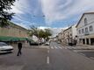
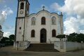
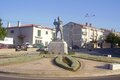
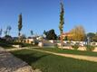
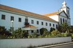
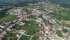
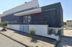
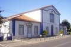

Multimédia
Nesta página encontra conteúdos multimédia.
Fotografias








Vídeo
Poesia
No centro de um país valente,
Cernache ergue-se com fulgor,
Terra de história tão presente,
Que à pátria deu o seu valor.
Entre pinhais e vales profundos,
Onde o ar puro traz bonança,
És o mais belo dos mundos,
Um doce berço de lembrança.